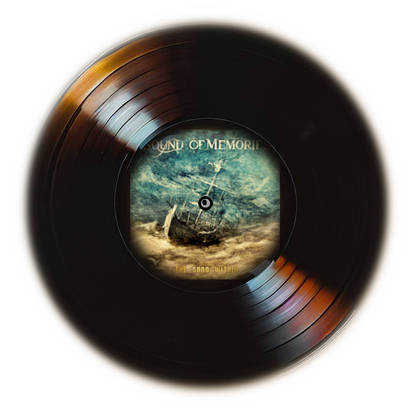

Sound of Memories
Sound of Memories est un groupe de death metal mélodique formé en 2010 à Paris par Alain (guitare), Lucho (guitare) et Fabien (basse). Influencé par des groupes comme In Flames, Dark Tranquillity ou At The Gates, le groupe propose un mélange de riffs heavy et thrash metal sur une base de death mélodique old school. Après avoir recruté Nacim à la batterie et Flo au chant, le groupe enregistre son premier EP “Living Circles” en 2013 au studio Zoe-H. Le groupe reçoit des critiques positives et se fait remarquer sur scène lors de festivals et de concerts. En 2015, le groupe signe sur le label Finisterian Dead End et sort son premier album “To Deliverance”, produit par Julien Delsol. Le groupe continue de tourner et de composer, et sort son deuxième album “The Sand Within” en 2018. Sound of Memories se distingue par sa musique énergique, brutale et mélodique, qui ravit les fans de headbang et de metal
Écoutez notre musique
Vous pouvez écouter notre musique sur les plateformes suivantes : METTRE API ICI
